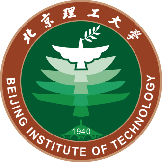

2025 — 2028Expected

IN PROGRESS
Master of Engineering in Integrated Circuit Engineering
Beijing Institute of Technology
School of Integrated Circuits and Electronics · Beijing, China
ANALOG CMOS · MEMS · INTEGRATED SENSING
Graduate researcher at Beijing Institute of Technology
My research spans MEMS device modeling and electrothermal co-analysis, low-noise high-precision sensor interface circuits, and integrated systems for biomedical and industrial measurement.
EDUCATION

IN PROGRESS
Beijing Institute of Technology
School of Integrated Circuits and Electronics · Beijing, China
Beijing University of Technology
Beijing, China
RESEARCH
My work connects circuit-level innovation with system-level validation: an integrated platform designed around real application constraints.
Physics-based modeling and characterization of MEMS sensing devices.
Coupled electrical and thermal analysis for device–circuit co-optimization.
Low-noise, high-precision ASIC interface circuits for sensor readout and control.
Integrated sensing systems for biomedical and industrial measurement applications.
PUBLICATIONS
IEEE NEMS 2026
Best Student Paper
An integrated thermal-flow sensing approach that improves system sensitivity through a refined constant-temperature-difference control scheme.
IEEE Internet of Things Journal · 12(20), 42590–42598
A portable wireless platform combining a CMOS-compatible MEMS flow sensor with respiratory analysis for real-time COPD monitoring and spirometric assessment.
Machine Intelligence Research · 22(4), 713–729
A multimodal vision-and-language navigation approach that bridges visual and textual semantics for robust object navigation in real-world environments.
Metadata curated from Google Scholar and verified against publisher or bibliographic records · Reviewed August 2026